2-13막 · 프로테우스와 바다의 축제
한국어 번역은 독일어 원문에 대응하는 자동 번역 초안입니다.
독일어 원문 · 한국어 번역
PROTEUS:
So einer wohl von deinem Schlag!
Das hält noch eine Weile nach;
Denn unter bleichen Geisterscharen
Seh' ich dich schon seit vielen hundret Jahern.프로테우스: 당신의 종류 중 하나입니다! 이것은 한동안 지속됩니다. 왜냐하면 창백한 유령 무리들 사이에서 나는 당신을 수백년 동안 보아왔습니다.
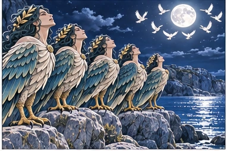
독일어 원문 · 한국어 번역
SIRENEN:
Welch ein Ring von Wölkchen ründet
Um den Mond so reichen Kreis?
Tauben sind es, liebentzündet,
Fittiche, wie Licht so weiß.사이렌: 구름 고리가 어떻게 형성되는지 달 주위에 이렇게 풍부한 원이 있나요? 그들은 사랑으로 불타오르는 비둘기들이다. 날개는 마치 빛처럼 하얗다.
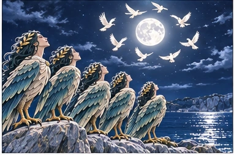
독일어 원문 · 한국어 번역
Paphos hat sie hergesendet,
Ihre brünstige Vogelschar;
Unser Fest, es ist vollendet,
Heitre Wonne voll und klar!파포스가 그들을 여기로 보냈습니다. 너의 썩어빠진 새 떼, 우리의 축하 행사는 완료되었습니다. 완전하고 맑은 고요한 행복!
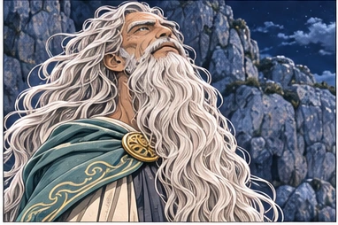
독일어 원문 · 한국어 번역
NEREUS:
Nennte wohl ein nächtiger Wanderer
Diesen Mondhof Lufterscheinung;
Doch wir Geister sind ganz anderer
Und der einzig richtigen Meinung:네레우스: 아마도 야간 등산객이 말한 것 같습니다. 이 달 궁정 공기 현상; 하지만 우리 영혼은 완전히 달라요 그리고 유일한 올바른 의견은 다음과 같습니다.
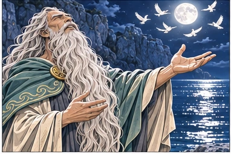
독일어 원문 · 한국어 번역
Tauben sind es, die begleiten
Meiner Tochter Muschelfahrt,
Wunderflugs besondrer Art,
Angelernt vor alten Zeiten.비둘기는 당신과 동행하는 사람들입니다 딸아이의 조개여행, 특별한 종류의 기적의 비행, 고대에 훈련받았습니다.
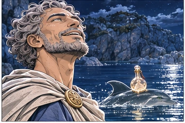
독일어 원문 · 한국어 번역
THALES:
Auch ich halte das fürs Beste,
Was dem wackern Mann gefällt,
Wenn im stillen, warmen Neste
Sich ein Heiliges lebend hält.탈레스: 저도 그게 제일 좋은거 같아요 용감한 사람을 기쁘게 하는 것은 무엇인가? 조용하고 따뜻한 둥지에 있을 때 자신을 성자로 살아있게 합니다.
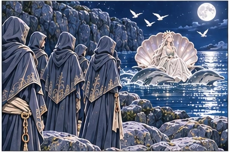
독일어 원문 · 한국어 번역
PSYLLEN UND MARSEN:
In Cyperns rauhen Höhlegrüften,
Vom Meergott nicht verschüttet,
Vom Seismos nicht zerrüttet,
Umweht von ewigen Lüften,PSYLLEN과 마르센: 키프로스의 거친 동굴 무덤에는 바다의 신이 묻은 것이 아니라, 지진으로 부서지지 않고, 영원한 공기에 휩싸여,
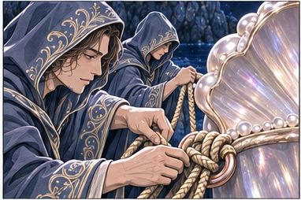
독일어 원문 · 한국어 번역
Und, wie in den ältesten Tagen,
In stillbewußtem Behagen
Bewahren wir Cypriens Wagen
Und führen, beim Säuseln der Nächte,그리고 옛날과 마찬가지로, 조용하고 의식적인 편안함 속에서 시프리앙의 마차를 지키자 그리고 밤의 부스럭거리는 소리로 이끌어라,
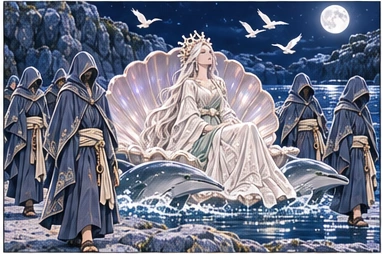
독일어 원문 · 한국어 번역
Durch liebliches Wellengeflechte,
Unsichtbar dem neuen Geschlechte,
Die lieblichste Tochter heran.
Wir leise Geschäftigen scheuen사랑스러운 파도 사이로, 새로운 세대에게는 보이지 않는, 가장 사랑스러운 딸이 온다. 우리는 바쁜 사람들을 조용히 하고 부끄러워한다
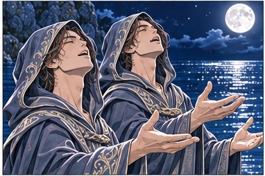
독일어 원문 · 한국어 번역
Weder Adler noch geflügelten Leuen,
Weder Kreuz noch Mond,
Wie es oben wohnt und thront,
Sich wechselnd wegt und regt,독수리도 날개 달린 사자도 아니고, 십자가도 달도 아니고, 그것이 어떻게 살아서 하늘에 왕좌에 앉아 있는지, 변화하고 움직이며,
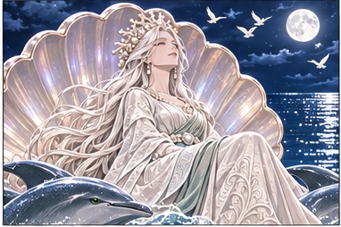
독일어 원문 · 한국어 번역
Sich vertreibt und totschlägt,
Saaten und Städte niederlegt.
Wir, so fortan,
Bringen die lieblichste Herrin heran.차를 몰고 가다가 스스로 목숨을 끊는다. 씨앗과 도시를 마련했습니다. 우리는 앞으로, 가장 사랑스러운 여주인을 데려오세요.
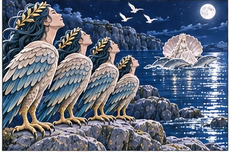
독일어 원문 · 한국어 번역
SIRENEN:
Leicht bewegt, in mäßiger Eile,
Um den Wagen, Kreis um Kreis,
Bald verschlungen Zeil' an Zeile,
Schlangenartig reihenweis,사이렌: 약간 움직였고, 적당한 속도로, 마차 주위를 돌며 원을 그리며 곧 한 줄씩 다 먹어치워질 것입니다. 뱀 모양의 행,
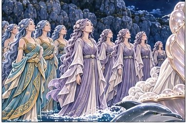
독일어 원문 · 한국어 번역
Naht euch, rüstige Nereiden,
Derbe Fraun, gefällig wild,
Bringet, zärtliche Doriden,
Galateen, der Mutter Bild:가까이 오세요, 활기 넘치는 네레이드여, 거친 여자들, 유쾌하게 거칠고, 가져와, 부드러운 Dorides, 갈라틴, 어머니의 사진:
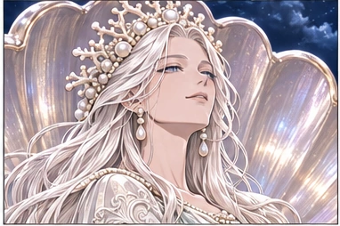
독일어 원문 · 한국어 번역
Ernst, den Göttern gleich zu schauen,
Würdiger Unsterblichkeit,
Doch wie holde Menschenfrauen
Lockender Anmutigkeit.신처럼 보이려고 진지하게, 불멸의 가치가 있는, 하지만 사랑스러운 인간 여자들처럼 매혹적인 은혜.
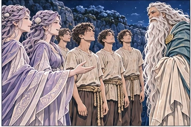
독일어 원문 · 한국어 번역
DORIDEN:
Leih uns, Luna, Licht und Schatten,
Klarheit diesem Jugendflor!
Denn wir zeigen liebe Gatten
Unserm Vater bittend vor.도리덴: 우리에게 빌려주세요, 루나, 빛과 그림자, 이 어린 꽃을 선명하게! 사랑하는 남편을 보여주기 때문에 우리 아버지께 기도합니다.
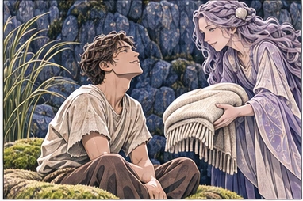
독일어 원문 · 한국어 번역
Knaben sind's, die wir gerettet
Aus der Brandung grimmem Zahn,
Sie, auf Schilf und Moos gebettet,
Aufgewärmt zum Licht heran,우리가 구한 건 소년들이야 서핑의 맹렬한 이빨로부터, 갈대와 이끼 위에 누워 있는 그녀, 빛을 향해 따뜻해지며,
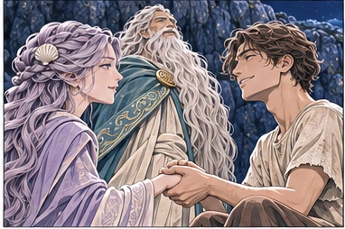
독일어 원문 · 한국어 번역
Die es nun mit heißen Küssen
Treulich uns verdanken müssen;
Schau die Holden günstig an!
NEREUS:
Hoch ist der Doppelgewinn zu schätzen:이제 뜨거운 키스로 해보세요 우리에게 진심으로 감사해야 합니다. 홀덴을 저렴하게 확인해보세요! 네레우스: 더블 승리는 매우 높이 평가됩니다.
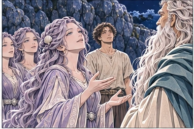
독일어 원문 · 한국어 번역
Barmherzig sein, und sich zugleich ergetzen.
DORIDEN:
Lobst du, Vater, unser Walten,
Gönnst uns wohlerworbene Lust,
Laß uns fest, unsterblich halten자비롭고 동시에 친절해야 합니다. 도리덴: 아버지, 당신은 우리의 행동을 칭찬하십니까? 우리에게 보람된 즐거움을 주소서, 굳게 붙잡자, 불멸의
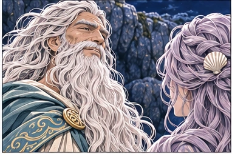
독일어 원문 · 한국어 번역
Sie an ewiger Jungendbrust.
NEREUS:
Mögt euch des schönen Fanges freuen,
Den Jüngling bildet euch als Mann;
Allein ich könnte nicht verleihen,당신은 영원한 젊음입니다. 네레우스: 아름다운 캐치를 즐기시기 바랍니다. 젊은이를 남자로 형성하십시오. 하지만 빌려줄 수는 없었어
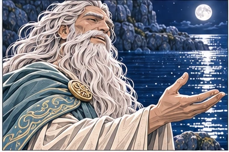
독일어 원문 · 한국어 번역
Was Zeus allein gewähren kann.
Die Welle, die euch wogt und schaukelt,
Läßt auch der Liebe nicht Bestand,
Und hat die Neigung ausgegaukelt,제우스만이 허락할 수 있는 것. 너를 흔들고 흔드는 파도, 사랑도 견디지 못하고, 그리고 성향을 속였습니다.
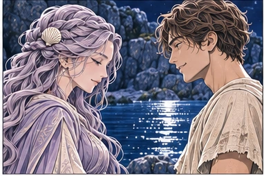
독일어 원문 · 한국어 번역
So setzt gemächlich sie ans Land.
DORIDEN:
Ihr, holde Knaben, seid uns wert,
Doch müssen wir traurig scheiden;
Wir haben ewige Treue begehrt,그래서 그녀는 여유롭게 해변에 섰습니다. 도리덴: 사랑스러운 소년 여러분, 우리에게 합당합니다. 하지만 우리는 슬프게도 헤어져야 합니다. 우리는 영원한 충성을 원했고,
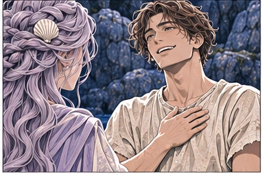
독일어 원문 · 한국어 번역
Die Götter wollen's nicht leiden.
DIE JÜNGLINGE:
Wenn ihr uns nur so ferner labt,
Uns wackre Schifferknaben;
Wir haben's nie so gut gehabt신들은 그것을 겪고 싶어하지 않습니다. 젊은이들: 계속해서 우리에게 먹이를 주신다면 우리 용감한 뱃사공들. 우리는 그렇게 좋은 적이 없었습니다
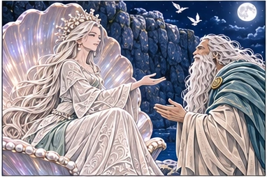
독일어 원문 · 한국어 번역
Und wollen's nicht besser haben.
NEREUS:
Du bist es, mein Liebchen! +
GALATEE:
O Vater! das Glück!
Delphine, verweilet! mich fesselt der Blick.그리고 우리는 그것이 더 나아지는 것을 원하지 않습니다. 네레우스: 바로 당신이에요, 내 사랑! + 갈라테아: 아 아버지! 행복! 델핀, 잠깐만요! 나는 그 모습에 매료되었습니다.
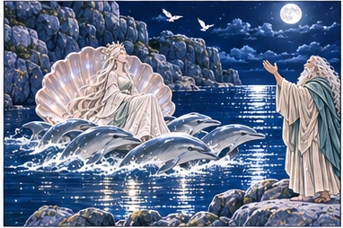
독일어 원문 · 한국어 번역
NEREUS:
Vorüber schon, sie ziehen vorüber
In kreisenden Schwunges Bewegung;
Was kümmert sie die innre herzliche Regung!
Ach, nähmen sie mich mit hinüber!네레우스: 이미 끝났어 지나가네 원형 스윙 동작에서; 그녀는 내면의 진심 어린 감정에 대해 무엇을 신경쓰나요? 아, 그들이 나를 그곳으로 데려간다면!
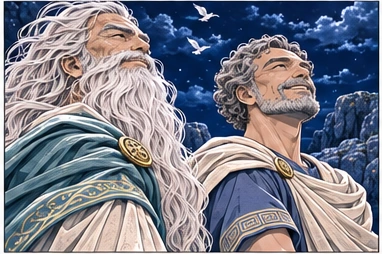
독일어 원문 · 한국어 번역
Doch ein einziger Blick ergetzt,
Daß er das ganze Jahr ersetzt,
THALES:
Heil! Heil! aufs neue!
Wie ich mich blühend freue,하지만 보기만 해도 마음이 편해진다 그는 일년 내내 교체하고 탈레스: 만세! 상하지 않은! 다시! 나는 얼마나 행복한지,
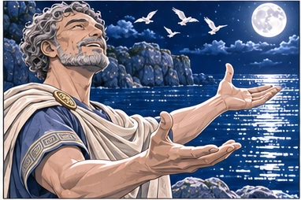
독일어 원문 · 한국어 번역
Vom Schönen, Wahren durchdrungen...
Alles ist aus dem Wasser entsprungen!!
Alles wird durch das Wasser erhalten!
Ozean, gönn uns dein ewiges Walten.아름답고 진실한 것이 스며들었습니다... 다 물에서 나왔어요!! 모든 것은 물에 의해 유지됩니다! 바다여, 당신의 영원한 통치를 우리에게 주소서.
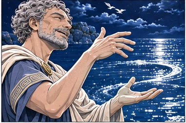
독일어 원문 · 한국어 번역
Wenn du nicht Wolken sendetest,
Nicht reiche Bäche spendetest,
Hin und her nicht Flüsse wendetest,
Die Ströme nicht vollendetest,구름을 보내지 않았다면, 풍부한 스트림을 기부하지 마세요. 당신은 강을 앞뒤로 바꾸지 않습니다. 당신이 완성하지 못한 강,
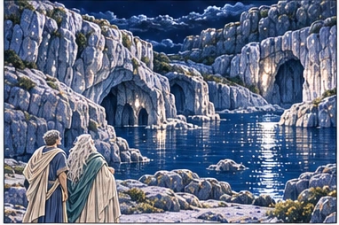
독일어 원문 · 한국어 번역
Was wären Gebirge, was Ebnen und Welt?
Du bist's der das frischeste Leben erhält.
ECHO:
Du bist's, dem das frischeste Leben entquellt.
NEREUS:
Sie kehren schwankend fern zurück,산은 무엇이고, 평원은 무엇이고, 세상은 무엇이겠는가? 가장 신선한 생명을 받는 사람은 바로 당신이다. 에코: 가장 신선한 생명이 흘러나오는 사람은 바로 당신입니다. 네레우스: 저 멀리 흔들리며 돌아오는데,
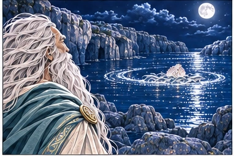
독일어 원문 · 한국어 번역
Bringen nicht mehr Blick zu Blick;
In gedehnten Kettenkreisen,
Sich festgemäß zu erweisen,
Windet sich die unzählige Schar.더 이상 시야를 확보하지 마십시오. 늘어진 사슬 원에서, 자신의 가치를 증명하기 위해, 수많은 군중이 바람을 피운다.
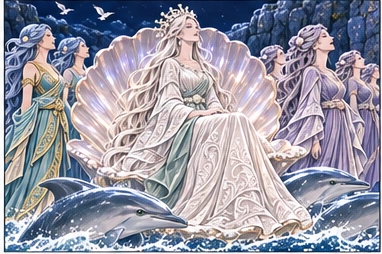
독일어 원문 · 한국어 번역
Aber Galateas Muschelthron
Seh' ich schon und aber schon.
Er glänzt wie ein stern
Durch die Menge.하지만 갈라테이아의 조개 왕좌 나는 그것을 볼 수 있고, 그러나 나는 그것을 볼 수 있다. 그는 별처럼 빛난다 군중을 통해.
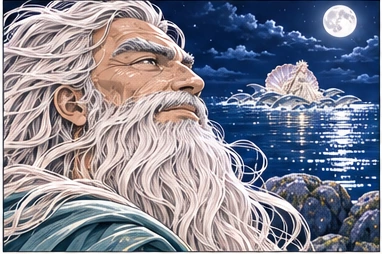
독일어 원문 · 한국어 번역
Geliebtes leuchtet durchs Gedränge!
Auch noch so fern
Schimmert's hell und klar,
Immer nah und wahr.사랑하는 사람은 군중 속에서 빛난다! 이렇게 멀리 있어도 맑고 투명하게 반짝반짝 빛나고, 항상 가깝고 진실합니다.
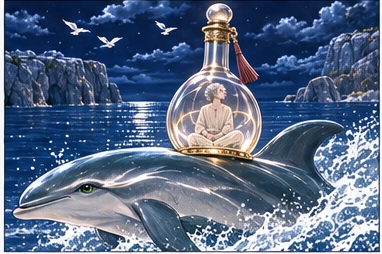
독일어 원문 · 한국어 번역
HOMUNCULUS:
In dieser holden Feuchte
Was ich auch hier beleuchte,
Ist alles reizend schön.
PROTEUS:
In dieser Lebensfeuchte호문쿨루스: 달콤한 습기 속에 여기서도 강조하는 것은 모든 것이 사랑스럽고 사랑스럽습니다. 프로테우스: 이 촉촉한 삶 속에서
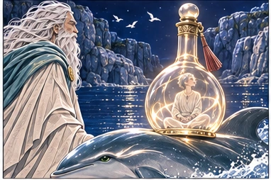
독일어 원문 · 한국어 번역
Erglänzt erst deine Leuchte
Mit herrlichem Getön.
NEREUS:
Welch neues Geheimnis in Mitte der Scharen
Will unseren Augen sich offengebaren?먼저 너의 등불이 빛난다 멋진 소리로. 네레우스: 군중 속에 나타난 새로운 비밀 우리 눈에 그 모습을 드러내고 싶나요?
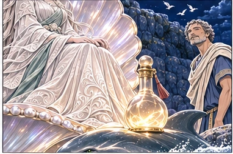
독일어 원문 · 한국어 번역
Was flammt um die Muschel, um Galatees Füße?
Bald lodert es mächtig, bald lieblich, bald süße,
Als wär' es von Pulsen der Liebe gerührt.
THALES:
Homunculus ist es, von Proteus verführt...껍질 주변, 갈라테이의 발 주변에는 어떤 불꽃이 있습니까? 이제는 강력하게 타오릅니다. 이제는 달콤하게, 이제는 달콤하게, 마치 사랑의 맥박이 닿은 것처럼. 탈레스: 프로테우스의 유혹을 받은 호문쿨루스인데...
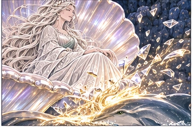
독일어 원문 · 한국어 번역
Es sind die Symptome des herrischen Sehnens,
Mir ahnet das ächzen beängsteten Dröhnens;
Er wird sich zerschellen am glänzenden Thron;
Jetzt flammt es, nun blitzt es, ergießet sich schon.이것은 오만한 갈망의 증상입니다. 나는 겁에 질린 포효의 신음소리를 느낀다. 그는 빛나는 보좌 앞에서 부서질 것이다. 이제는 타오르고 있고, 이제는 번쩍이고 있고, 벌써 쏟아져 나오고 있습니다.
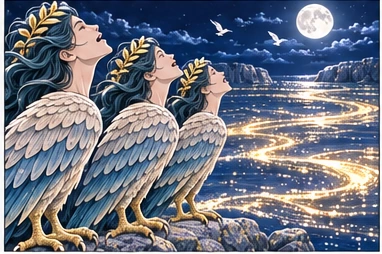
독일어 원문 · 한국어 번역
SIRENEN:
Welch feuriges Wunder verklärt uns die Wellen,
Die gegeneinander sich funkelnd zerschellen?
So leuchtet's und schwanket und hellet hinan:
Die Körper, sie glühen auf nächtlicher Bahn,사이렌: 어떤 불 같은 기적이 우리를 위해 파도를 변화시켰습니까? 어느 것이 서로 반짝이며 부서지나요? 그래서 그것은 빛나고 흔들리고 빛난다: 그 시체들은 밤의 길에서 빛나고
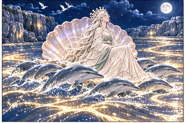
독일어 원문 · 한국어 번역
Und ringsum ist alles vom Feuer umronnen;
So herrsche denn Eros, der alles begonnen!
Heil dem Meere! Heil den Wogen,
Von dem heilgen Feuer umzogen!그리고 주변은 모두 불로 둘러싸여 있습니다. 모든 것을 시작한 에로스가 통치하게 하라! 바다에 만세! 파도를 맞이하라, 신성한 불에 둘러싸여 있습니다!
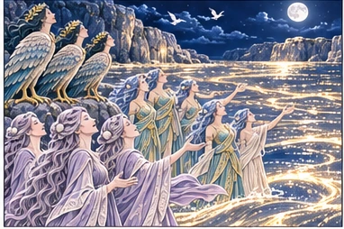
독일어 원문 · 한국어 번역
Heil dem Wasser! Heil dem Feuer!
Heil dem seltnen Abenteuer!
ALL-ALLE:
Heil den mildgewogenen Lüften!물을 우박! 불을 환영하라! 희귀한 모험을 만나보세요! 전체-전체: 온화한 공기를 환영합니다!
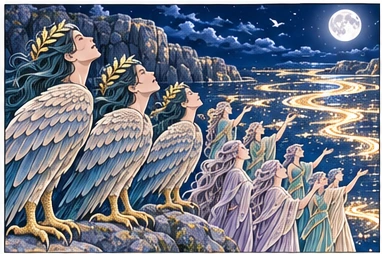
독일어 원문 · 한국어 번역
Heil geheimnisreichen Grüften!
Hochgefeiert seid allhier,
Element' ihr alle vier!
신비한 무덤을 환영하세요! 여러분 모두는 여기서 축하를 받았습니다. 엘리먼트' 네 명 모두!